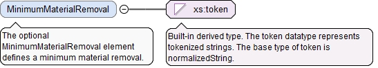

The optional MinimumMaterialRemoval element defines a minimum material removal.
Diagram

Type
xs:token
Properties
content
simple
minOccurs
0
Source
<xs:element name="MinimumMaterialRemoval" type="xs:token" minOccurs="0"><xs:annotation><xs:documentation>The optional MinimumMaterialRemoval element defines a minimum material removal.</xs:documentation></xs:annotation></xs:element>
<xs:element name="DirectionOfLay" type="RoughnessLayEnumType" minOccurs="0"><xs:annotation><xs:documentation>The optional DirectionOfLay element defines a direction of lay.</xs:documentation></xs:annotation></xs:element>
The id attribute is the QIF id of the characteristic, used for referencing.
Source
<xs:complexType name="SurfaceTextureCharacteristicNominalType"><xs:annotation><xs:documentation>The SurfaceTextureCharacteristicNominalType defines a unique surface texture characteristic nominal.</xs:documentation></xs:annotation><xs:complexContent><xs:extension base="CharacteristicNominalBaseType"><xs:sequence><xs:element name="Obtention" type="RoughnessObtentionEnumType" default="UNDEFINED" minOccurs="0"><xs:annotation><xs:documentation>The optional Obtention element defines an obtention.</xs:documentation></xs:annotation></xs:element><xs:element name="Applicability" type="RoughnessApplicabilityEnumType" default="UNSUPPORTED" minOccurs="0"><xs:annotation><xs:documentation>The optional Applicability element defines an applicability.</xs:documentation></xs:annotation></xs:element><xs:element name="MinimumMaterialRemoval" type="xs:token" minOccurs="0"><xs:annotation><xs:documentation>The optional MinimumMaterialRemoval element defines a minimum material removal.</xs:documentation></xs:annotation></xs:element><xs:element name="ProductionMethod" type="xs:token" minOccurs="0"><xs:annotation><xs:documentation>The optional ProductionMethod element defines a manufacturing method.</xs:documentation></xs:annotation></xs:element><xs:element name="Cutoff" type="LinearValueType" minOccurs="0"><xs:annotation><xs:documentation>The optional Cutoff element defines a cutoff value.</xs:documentation></xs:annotation></xs:element><xs:element name="SecondaryRoughnessParameter" type="LinearValueType" minOccurs="0"><xs:annotation><xs:documentation>The optional SecondaryRoughnessParameter element defines a secondary roughness parameter.</xs:documentation></xs:annotation></xs:element><xs:element name="DirectionOfLay" type="RoughnessLayEnumType" minOccurs="0"><xs:annotation><xs:documentation>The optional DirectionOfLay element defines a direction of lay.</xs:documentation></xs:annotation></xs:element><xs:element name="OtherSurfaceParameter" type="xs:token" minOccurs="0"><xs:annotation><xs:documentation>The optional OtherSurfaceParameter element defines other surface finish parameters.</xs:documentation></xs:annotation></xs:element></xs:sequence></xs:extension></xs:complexContent></xs:complexType>